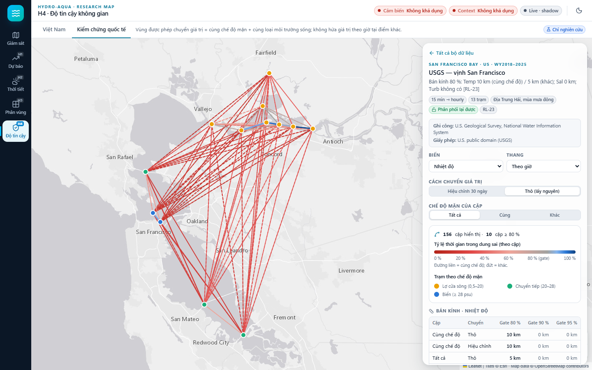

Hydro-Aqua-Predict · Cát Bà – Hải Phòng – Quảng Ninh
Kế hoạch · quyết định #10
HƯỚNG 1 · ƯU TIÊN 1
Từ 15 phút lên 3–12 giờ, có khoảng tin cậy
HƯỚNG 2 · ƯU TIÊN 2
Cần ~63 ngày bản tin as-issued, không backfill được
HƯỚNG 3 · SONG SONG
Lấp khoảng chờ dữ liệu của hướng 2
HƯỚNG 4 · ƯU TIÊN 4
Thử phương pháp trên dữ liệu nước ngoài trước
Phase 0 trước tất cả: lịch sử sensor đầy đủ, đúng múi giờ, có QC.
Gate #16: thắng persistence ≥ 4/5 fold và kiểm định DM trên lockbox 14 ngày (p < 0.05).
Hydro-Aqua-Predict · Báo cáo tiến độ 10/2026
Trước khi vào nội dung
Cách đoán đơn giản nhất: giá trị tương lai bằng giá trị hiện tại. Mô hình phải thắng cách này mới có ích.
Đặt trước khi thử: thắng persistence ở ≥ 4/5 lần thử và trên 14 ngày kiểm tra cuối có ý nghĩa thống kê.
Hệ thống chạy thật, ghi và chấm điểm dự báo, nhưng chưa gửi cho người nuôi.
Khoảng mà giá trị thật nên rơi vào 80 % số lần. Đạt khi tỷ lệ thực tế nằm trong 75–85 %.
Loại nước theo độ mặn mùa mưa: cửa sông (< 20 psu), chuyển tiếp (20–28), biển (≥ 28).
Điểm 0.5–1 đo mức bản đồ xếp vùng nuôi thật cao hơn vùng khác. 0.5 = đoán ngẫu nhiên.
Hydro-Aqua-Predict · Báo cáo tiến độ 10/2026
Các công việc đã thực hiện
1 Vấn đề
2 Giải pháp
3 Kết quả
4 Vấn đề còn lại
5 Hướng tiếp
| Nhóm | Công việc |
|---|---|
| Phase 0 | 1 · Nền dữ liệu sensor và thời tiết |
| Hướng 1 | 2 · Dự báo nhiệt độ 3–12 h · 3 · Sự cố đầu dò pH · 4 · Khoảng tin cậy · 5 · Vận hành shadow |
| Hướng 2 | 6 · Thời tiết cho cảnh báo |
| Hướng 3 | 7 · Bản đồ phân vùng nuôi |
| Hướng 4 | 8 · Kiểm chứng quốc tế · 9 · Áp dụng cho Việt Nam |
| Demo | 10 · Giao diện research-map |
Hydro-Aqua-Predict · Báo cáo tiến độ 10/2026
Công việc 1 · Phase 0
Hoàn thành
1 · VẤN ĐỀ
Lịch sử sensor rời rạc. Giờ trong file export bị đọc sai 7 giờ. Sensor COD hỏng nhưng vẫn được coi là hợp lệ.
2 · GIẢI PHÁP
Tải bù toàn bộ 29/05 → 15/10, sửa múi giờ, thêm kiểm tra sensor kẹt. Hai tác vụ tự động: sensor mỗi ngày, thời tiết mỗi giờ.
3 · KẾT QUẢ
123/139
ngày đạt yêu cầu độ phủ dữ liệu.
Mọi kết quả trước đó đã được chạy lại với giờ đúng.
4 · VẤN ĐỀ CÒN LẠI
16 ngày thiếu do phía nhà cung cấp. Máy tắt thì việc thu thời tiết bị gián đoạn.
5 · HƯỚNG TIẾP
Kiểm tra độ phủ ngày 22/10; cân nhắc một máy chạy liên tục.
Nguồn: nhật ký nghiên cứu RL-01 → RL-05
Công việc 2 · Hướng 1
Đạt tiêu chí
1 · VẤN ĐỀ
Dự báo cũ chỉ tới 15 phút. Người nuôi cần biết trước 3–12 giờ để kịp xử lý.
2 · GIẢI PHÁP
Mô hình hồi quy (ridge) từ lịch sử sensor và bản tin thời tiết. So với persistence qua 5 lần thử trượt và 14 ngày kiểm tra cuối.
3 · KẾT QUẢ
−46 %
sai số so với persistence ở +12 giờ.
+1 h −20 % · +3 h −30 % · +6 h −38 %. Đạt tiêu chí ở mọi mốc. Thời tiết giúp giảm thêm 8–14 %.
4 · VẤN ĐỀ CÒN LẠI
NH4, TSS chưa dự báo được. Chỉ một trạm; kiểm tra cuối mới 14 ngày.
5 · HƯỚNG TIẾP
Chạy shadow ít nhất 4 tuần để kiểm chứng trên dữ liệu thật (công việc 5).
Nguồn: RL-08, RL-18 · lockbox 01–15/10/2026
Công việc 3 · Hướng 1
Xử lý một phần
1 · VẤN ĐỀ
Từ 19/09 pH tụt về ~6.9 và chu kỳ ngày–đêm đảo ngược: dấu hiệu đầu dò hỏng, không phải nước thay đổi.
2 · GIẢI PHÁP
Luật kiểm tra pH (ngoài 7.0–8.6, nhảy > 0.5/giờ). Đánh giá lại pH trên dữ liệu sạch. Thêm mô hình nhiệt độ không dùng pH.
3 · KẾT QUẢ
21/27
ngày hỏng được tự gắn cờ; 0/113 ngày sạch bị gắn nhầm.
Dự báo pH 3–12 h không đạt (1/18 cấu hình) → đã rút khỏi shadow.
4 · VẤN ĐỀ CÒN LẠI
6 ngày trôi nhẹ chưa bắt được. Đầu dò chưa được sửa.
5 · HƯỚNG TIẾP
Xin nhật ký bảo dưỡng 16–19/09, hiệu chuẩn đầu dò; thêm luật so với mức nền.
Nguồn: RL-13, RL-17, RL-18
Công việc 4 · Hướng 1
Đạt, chờ xác nhận
1 · VẤN ĐỀ
Từ 05/10 chênh nóng–lạnh ngày–đêm tăng (3 → 5.3 °C); khoảng tin cậy cũ quá hẹp, hụt độ phủ.
2 · GIẢI PHÁP
Cho khoảng tin cậy tự giãn theo biên độ nhiệt 24 giờ trước đó (phương pháp aci_amp).
3 · KẾT QUẢ
36/36
cấu hình đạt độ phủ đúng (cách cũ: 20/36).
Đổi lại khoảng rộng hơn 0–11 %. Đã thêm vào hệ thống dạng tùy chọn.
4 · VẤN ĐỀ CÒN LẠI
Thử trên đúng giai đoạn đã dùng để thiết kế, nên kết quả có thể lạc quan.
5 · HƯỚNG TIẾP
Xác nhận trên dữ liệu shadow mới rồi mới bật mặc định.
Nguồn: RL-11, RL-13, RL-19
Công việc 5 · Hướng 1
Chờ bật dữ liệu thật
1 · VẤN ĐỀ
Mọi kết quả mới là thử trên dữ liệu quá khứ. Cần chạy song song với thực tế để có bằng chứng.
2 · GIẢI PHÁP
Đưa mô hình vào shadow runner: tự dự báo, ghi sổ, chấm điểm. Không phát hành khi dữ liệu cũ.
3 · KẾT QUẢ
12
mô hình nhiệt độ 3/6/12 h sẵn sàng (có và không dùng pH).
Chạy thử: phát hành đúng; 6 mô hình pH bị bỏ qua đúng.
4 · VẤN ĐỀ CÒN LẠI
Chưa có bản ghi thật: đang đọc dữ liệu cache, chưa bật dữ liệu biển, chưa có tác vụ chạy định kỳ.
5 · HƯỚNG TIẾP
Bật dữ liệu live, dữ liệu biển, tác vụ 5 phút/lần; sau 4 tuần so sánh.
Nguồn: RL-15, RL-26
Công việc 6 · Hướng 2
Đang thu dữ liệu
1 · VẤN ĐỀ
Phải dùng đúng bản tin có tại lúc dự báo, không dùng số đo thời tiết sau đó. Bản tin cũ không lấy bù được.
2 · GIẢI PHÁP
Thu bản tin mỗi giờ. Thử trước bằng bản tin dựng lại, chỉ cho dùng sau khi kết thúc ngày phát hành 12 giờ.
3 · KẾT QUẢ
−8…14 %
sai số dự báo nhiệt độ 3–12 h khi thêm thời tiết.
Có ý nghĩa thống kê ở cả 3 mốc.
4 · VẤN ĐỀ CÒN LẠI
Bản tin tự thu mới phủ 52 % số giờ trong 7 ngày; cần khoảng 63 ngày liên tục.
5 · HƯỚNG TIẾP
Thu đủ rồi đánh giá lại. Thời tiết chỉ làm bối cảnh, không tự bật cảnh báo.
Nguồn: RL-07, RL-08 · quyết định #13
Công việc 7 · Hướng 3
Có kết quả bước đầu
1 · VẤN ĐỀ
Tiêu chí trong bài báo tham khảo (Ghaderi 2026) viết cho lồng xa bờ; lồng ở HP/QN nằm sát bờ.
2 · GIẢI PHÁP
Dựng lớp dữ liệu 2024 cho HP/QN; thử bộ tiêu chí gần bờ đặt trước; kiểm chứng độc lập trên 28 vùng nuôi ở Hong Kong.
3 · KẾT QUẢ
0.63 → 0.75
AUC tại Hong Kong: bộ gần bờ tốt hơn bộ của bài báo.
Ở VN, vùng nuôi thật bị xếp thấp (phân vị 24) theo tiêu chí xa bờ.
4 · VẤN ĐỀ CÒN LẠI
Lớp độ sâu, sóng, gió quá thô. Chưa có tọa độ vùng nuôi chính thức của VN.
5 · HƯỚNG TIẾP
Độ sâu gần bờ chi tiết, chỉ số che chắn < 1 km; xin tọa độ từ Sở và Chi cục Thủy sản.
Nguồn: RL-06, RL-16 · quyết định #15
Công việc 8 · Hướng 4
7 bộ dữ liệu
1 · VẤN ĐỀ
Chỉ có 1 sensor: số đo của nó dùng được cho vùng nào? VN chưa có mạng nhiều sensor để kiểm tra.
2 · GIẢI PHÁP
Mượn 7 mạng trạm (~240 trạm; Mỹ, Puerto Rico, HK): lấy trạm A đoán cho trạm B, đo tỷ lệ thời gian trong dung sai.
3 · KẾT QUẢ
7/7
bộ cho cùng kết luận: chế độ mặn quyết định, khoảng cách thì không.
Theo ngày, lớp ngưỡng nhiệt độ (tốt/theo dõi/xấu) khớp ≥ 80 % tới 20–30 km ở 4/4 bộ. DO, độ đục không chuyển được.
4 · VẤN ĐỀ CÒN LẠI
Giá trị theo giờ/ngày gần như không chuyển được. Với độ mặn, pH, DO, số đo cũ 1 ngày tại chỗ còn tốt hơn mượn trạm khác.
5 · HƯỚNG TIẾP
Bản đồ tin cậy VN báo theo lớp ngưỡng ngày; ưu tiên lấy mẫu định kỳ tại điểm nuôi.
Nguồn: RL-12, RL-14, RL-20 → RL-28 · Chesapeake: Maryland DNR Tidewater Ecosystem Assessment Division
Công việc 9 · Hướng 4
Một phần
1 · VẤN ĐỀ
Cần biết NB1 thuộc loại nước nào và trạm nào cùng chế độ mặn với nó.
2 · GIẢI PHÁP
Dựng lớp chế độ mặn từ quan trắc tỉnh; chạy lại đánh giá có tách cùng và khác chế độ.
3 · KẾT QUẢ
NB1: biển
77/97 trạm QN cùng loại; trạm đo gần nhất NB43 cách 11.6 km.
Khác chế độ: độ mặn chỉ khớp ±1 psu ở 0.5–3 % số lần.
4 · VẤN ĐỀ CÒN LẠI
Độ mặn HP là số mô hình, kết quả cũ "1/36" là ảo. Chỉ 16–22 đợt lấy mẫu, chưa đủ 30.
5 · HƯỚNG TIẾP
Tìm nguồn độ mặn HP đo thật; đặt sensor thứ hai cùng chế độ với NB1.
Nguồn: RL-25
Công việc 10 · Demo
Hoàn thành
1 · VẤN ĐỀ
Demo cũ chỉ một màn hình, khó trình bày kết quả nghiên cứu, tải chậm.
2 · GIẢI PHÁP
Một trang giám sát và bốn trang H1–H4; API chỉ đọc kết quả; giao diện sáng/tối.
4 · VẤN ĐỀ CÒN LẠI
Trang giám sát cần Postgres; chưa có dự báo shadow thật để hiển thị.
3 · KẾT QUẢ · 5 trang, lần tải đầu nhẹ hơn ~49 %

5 · Hướng tiếp: đã thêm dữ liệu H4.6 và IRLON; dùng để demo trực tiếp.
Ảnh: trang H4 · kiểm chứng quốc tế, USGS vịnh San Francisco
Tổng kết
| Công việc | Kết quả chính | Trạng thái |
|---|---|---|
| 1 · Nền dữ liệu | 123/139 ngày đạt; sửa lệch giờ 7 h | Hoàn thành |
| 2 · Dự báo nhiệt độ | Sai số giảm 20–46 % ở 1–12 h | Đạt |
| 3 · Sự cố pH | Tự gắn cờ 21/27 ngày; rút dự báo pH | Một phần |
| 4 · Khoảng tin cậy | 36/36 cấu hình đạt độ phủ | Chờ xác nhận |
| 5 · Vận hành shadow | 12 mô hình sẵn sàng | Chờ bật |
| 6 · Thời tiết | Giảm thêm 8–14 % sai số | Đang thu |
| 7 · Phân vùng | AUC HK 0.63 → 0.75 | Bước đầu |
| 8 · Kiểm chứng quốc tế | 7/7 bộ: chế độ mặn quyết định; lớp nhiệt độ ngày 20–30 km | Hoàn thành |
| 9 · Áp dụng VN | NB1 chế độ biển; độ mặn HP là số mô hình | Một phần |
| 10 · Research-map | 5 trang, demo được | Hoàn thành |
Chi tiết: docs/research-log.md (RL-01 → RL-26) · experiments/RESULTS.md
Hướng triển khai tiếp
Chạy shadow 4 tuần; so mô hình có/không pH; xác nhận khoảng tin cậy mới
Thu đủ ~63 ngày bản tin, đánh giá lại thời tiết và luật cảnh báo
Độ sâu gần bờ chi tiết, chỉ số che chắn; tọa độ vùng nuôi chính thức
Bản đồ VN theo lớp ngưỡng ngày (nhiệt độ); sensor thứ hai cùng chế độ
CẦN HỖ TRỢ / QUYẾT ĐỊNH
Bật dữ liệu live cho shadow · hiệu chuẩn đầu dò pH (GreenLab) · nguồn độ mặn HP đo thật · tọa độ vùng nuôi từ Sở/Chi cục · máy chạy liên tục để thu thời tiết
Nguyên tắc giữ nguyên: shadow trước, tiêu chí đặt trước, báo kết quả trung thực kể cả khi không đạt